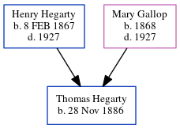

Thomas Hugh Hegarty 1886 -
[ Home ] | [ Calendar ] | [ Surnames Index ] | [ Census Index ] | [ Family History ]The eldest of 3 children of Henry Hegarty (a worked at cyclorama in grant park) and Mary Gallop, Thomas Hegarty, the great-great-uncle of Michele Copp (née Phillips), was born in Georgia on Nov 28, 18861,2.
During his life, he was living in Atlanta, Fulton, Georgia, USA from 1917 to 19182; and in Atlanta Ward 3, Georgia in 19201.
Parents
- Henry J. was born on Feb 8, 1867
- Mary was born in 1868
Citations
- 1920 United States Federal Census Online publication - Provo, UT, USA: MyFamily.com, Inc., 2005. For details on the contents of the film numbers, visit the following NARA web page: NARA. Note: Enumeration Districts 819-839 on roll 323 (Chicago City.Original data - United States of America (Marital Status: Single; Relation to Head: Son)
- U.S., World War I Draft Registration Cards, 1917-1918 Ancestry.com Operations Inc (United States, Selective Service System. World War I Selective Service System Draft Registration Cards, 1917-1918. Washington, D.C.: National Archives and Records Administration. M1509, 4,582 rolls. Imaged from Family History Library microfilm.)
Family Tree
Generated by ged2site. Last updated on Jun 6, 2024